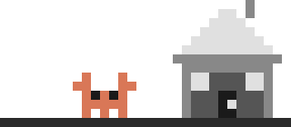

Linux, for agents
A purpose-built Linux distribution designed as the runtime environment for AI coding agents. Built for the machines that build your software.
Join the waitlistYou've built an agent that writes code, runs tests, and deploys services. Now you need somewhere to run it. You look at what's available and realize every option was designed for humans, not machines.
The quickest path: give the agent access to your own machine. It starts running commands, installing packages, writing files alongside your own projects. For you, the engineer, this feels efficient until you realize there's no isolation. The agent's npm install conflicts with yours. Its background processes eat your CPU. Its file writes land in your home directory.
From the agent's perspective, it's even worse. It's walking through someone else's house, tiptoeing around config files it doesn't understand, constrained by permissions set up for a human workflow. One wrong rm -rf and your afternoon is gone. Your machine was built for you. It was never meant to be shared with something that runs 24 hours a day and doesn't know when to stop.
Containers feel like the right answer. Isolated, reproducible, lightweight. But Docker was designed for shipping applications, not hosting residents. Your agent needs to install apt packages mid-session, but every install requires rebuilding the image. It needs persistent state across restarts, but volumes are an afterthought. It needs real networking, but you're debugging iptables rules inside a container.
The agent experiences Docker as a straitjacket. It can't systemctl start services. It can't modify its own environment without the whole container being rebuilt. Long-running sessions crash when the container is recycled. Containers are for apps, not residents. Your agent isn't a microservice -- it's a worker that needs a real operating system.
So you spin up a full virtual machine. Now you have a real OS, real process isolation, real networking. But also real overhead. You're provisioning Ubuntu, configuring users, installing toolchains, setting up SSH keys, hardening security -- before the agent writes a single line of code. Every new agent instance means repeating this setup.
From the agent's side, it lands in a blank, generic Linux install that knows nothing about its workload. No pre-installed language runtimes. No agent-specific user accounts. No resource limits tuned for agent behavior. You become the sysadmin for your agent, hand-configuring an environment that should have been ready on boot.
There's a better way. What if the operating system itself was designed for agents?
Features section placeholder
Comparison section placeholder
Signup section placeholder
FAQ section placeholder